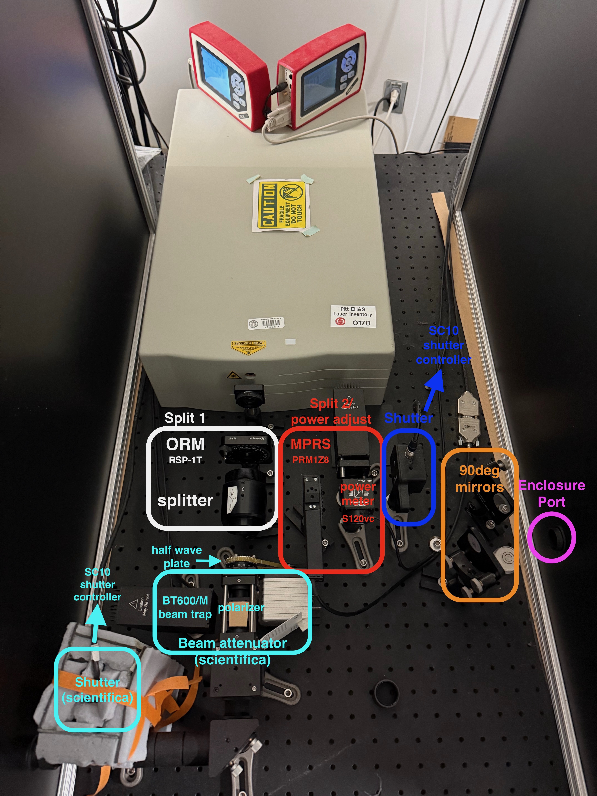

2P Rig Documentation
Setup, configuration, and operation of the lab's two in vivo 2-photon calcium imaging (2PCI) rigs — the Sutter rig and the Scientifica rig.

The two rigs run the same software stack (Ephus 2.1.0, ScanImage 5.3.1/2017, the same custom user functions) and share the same MaiTai laser, split between them. Most documentation is therefore common to both; only the pages under each rig's own section are rig-specific.
| Sutter | Scientifica | |
|---|---|---|
| Microscope | Sutter MOM (objective moves) | Scientifica S-Scope-II (stage moves) |
| Computer | Dell Precision T5810 | Dell Precision T3600 |
| Widefield camera | Retiga 2000R (1600 × 1200) | Rolera-XR (696 × 520) |
| Laser power control | Thorlabs PRM1Z8 + KDC101, Kinesis | 1U rack COM3, LinLab 2 UMS |
Common
Applies to both rigs.
- Software - Software stack and versions
- Drivers - Required drivers and installation
- Configuration - Ephus (widefield + sound stimuli) and ScanImage (2P) settings
- Operation - Reference for acquisition loops etc.
- Widefield Epifluorescence - QCam widefield imaging for mapping cortical subfields to target A1
- 2P Laser Power control - Motorised waveplate attenuation on both rigs
- 2P Laser Alignment - Alignment procedures with safety protocols
- Speaker calibration - Calibrating the free-field speaker
- 2P Laser Power calibration - Laser power measurement
- Rig Setup - Common install sequence after reinstalling Windows
- Code - Custom scripts and analysis tools
Sutter rig
- Hardware - Components and DAQ channel assignments
- Rig-specific drivers - Drivers unique to this rig
- Pupillometry - Details for capturing pupillometry
Scientifica rig
- Hardware - Components, 1U rack COM port map
- DAQ wiring - Terminal-by-terminal wiring, signal chains, diagram
- Rig-specific drivers - Drivers unique to this rig
Appendices
- Galvo scan settings - Why the rigs reach 5 Hz at different zoom factors, and fixing the comb artifact
Support
Primary Contact (Sutter): Rick Ayer (Sutter Instruments) Email: rick@sutter.com